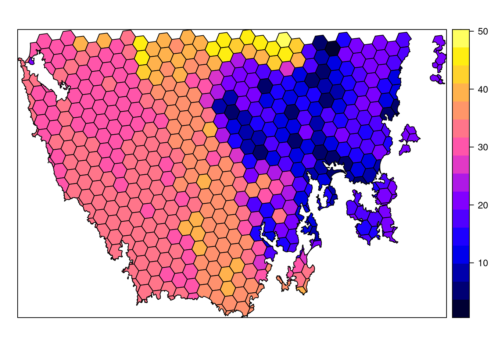

Chapter 3 Data
3.1 Starting out
We will start by opening RStudio. Ideally, you will have already installed both R and Rstudio before the workshop. If you have not done this already, then please see the Setting up your computer section. During this workshop, please do not copy and paste code from the workshop manual into RStudio. Instead, please write it out yourself in an R script. When programming, you will spend a lot of time fixing coding mistakes—that is, debugging your code—so it is best to get used to making mistakes now when you have people here to help you. You can create a new R script by clicking on File in the RStudio menu bar, then New File, and then R Script.

After creating a new script, you will notice that a new Source panel has appeared. In the Source panel, you can type and edit code before you run it. You can run code in the Source panel by placing the cursor (i.e. the blinking line) on the desired line of code and pressing Control + Enter on your keyboard (or CMD + Enter if you are using an Apple computer). You can save the code in the Source panel by pressing Control + s on your keyboard (or CMD + s if you are using an Apple computer).

You can also make notes and write your answers to the workshop questions inside the R script. When writing notes and answers, add a # symbol so that the text following the # symbol is treated as a comment and not code. This means that you don’t have to worry about highlighting specific parts of the script to avoid errors.
# this is a comment and R will ignore this text if you run it
# R will run the code below because it does not start with a # symbol
print("this is not a comment")## [1] "this is not a comment"# you can also add comments to the same line of R code too
print("this is also not a comment") # but this is a comment## [1] "this is also not a comment"Remember to save your script regularly to ensure that you don’t lose anything in the event that RStudio crashes (e.g. using Control + s or CMD + s)!
3.2 Attaching packages
Now we will set up our R session for the workshop. Specifically, enter the following R code to attach the R packages used in this workshop.
# load packages
library(prioritizr)
library(sf)
library(rgdal)
library(raster)
library(rgeos)
require(mapview)
library(units)
library(scales)
library(assertthat)
library(gridExtra)
library(dplyr)You should have already downloaded the data. If you have not already done so, you can download it from here. After downloading the data, you can unzip the data into a new folder. Next, you will need to set the working directory to this new folder. To achieve this, click on the Session button on the RStudio menu bar, then click Set Working Directory, and then Choose Directory.

Now navigate to the folder where you unzipped the data and select Open. You can verify that you have correctly set the working directory using the following R code. You should see the output TRUE in the Console panel.
## [1] TRUE3.3 Data import
Now that we have downloaded the dataset, we will need to import it into our R session. Specifically, this data was obtained from the “Introduction to Marxan” course and was originally a subset of a larger spatial prioritization project performed under contract to Australia’s Department of Environment and Water Resources. It contains vector-based planning unit data (pu.shp) and the raster-based data describing the spatial distributions of 32 vegetation classes (vegetation.tif) in southern Tasmania, Australia. Please note this dataset is only provided for teaching purposes and should not be used for any real-world conservation planning. We can import the data into our R session using the following code.
3.4 Planning unit data
The planning unit data contains spatial data describing the geometry for each planning unit and attribute data with information about each planning unit (e.g. cost values). Let’s investigate the pu_data object. The attribute data contains 5 columns with contain the following information:
id: unique identifiers for each planning unitcost: acquisition cost values for each planning unit (millions of Australian dollars).status: status information for each planning unit (only relevant with Marxan)locked_in: logical values (i.e.TRUE/FALSE) indicating if planning units are covered by protected areas or not.locked_out: logical values (i.e.TRUE/FALSE) indicating if planning units cannot be managed as a protected area because they contain are too degraded.
## class : SpatialPolygonsDataFrame
## features : 516
## extent : 348703.2, 611932.4, 5167775, 5344516 (xmin, xmax, ymin, ymax)
## crs : +proj=utm +zone=55 +south +datum=WGS84 +units=m +no_defs
## variables : 5
## names : id, cost, status, locked_in, locked_out
## min values : 557, 3.59717531470679, 0, 0, 0
## max values : 1130, 47.238336402701, 2, 1, 1## Formal class 'SpatialPolygonsDataFrame' [package "sp"] with 5 slots
## ..@ data :'data.frame': 516 obs. of 5 variables:
## ..@ polygons :List of 516
## ..@ plotOrder : int [1:516] 69 104 1 122 157 190 4 221 17 140 ...
## ..@ bbox : num [1:2, 1:2] 348703 5167775 611932 5344516
## .. ..- attr(*, "dimnames")=List of 2
## ..@ proj4string:Formal class 'CRS' [package "sp"] with 1 slot## [1] "SpatialPolygonsDataFrame"
## attr(,"package")
## [1] "sp"## [1] "data" "polygons" "plotOrder" "bbox" "proj4string"## CRS arguments:
## +proj=utm +zone=55 +south +datum=WGS84 +units=m +no_defs## [1] 516## id cost status locked_in locked_out
## 1 557 29.74225 0 FALSE FALSE
## 2 558 29.87703 0 FALSE FALSE
## 3 574 28.60687 0 FALSE FALSE
## 4 575 30.83416 0 FALSE FALSE
## 5 576 38.75511 0 FALSE FALSE
## 6 577 38.11618 2 TRUE FALSE## [1] 29.74225 29.87703 28.60687 30.83416 38.75511 38.11618## [1] 47.23834## [1] 3.597175## [1] 26.87393
Now, you can try and answer some questions about the planning unit data.
- How many planning units are in the planning unit data?
- What is the highest cost value?
- Is there a spatial pattern in the planning unit cost values (hint: use
plotto make a map)?
3.5 Vegetation data
The vegetation data describe the spatial distribution of 32 vegetation classes in the study area. This data is in a raster format and so the data are organized using a grid comprising square grid cells that are each the same size. In our case, the raster data contains multiple layers (also called “bands”) and each layer has corresponds to a spatial grid with exactly the same area and has exactly the same dimensionality (i.e. number of rows, columns, and cells). In this dataset, there are 32 different regular spatial grids layered on top of each other – with each layer corresponding to a different vegetation class – and each of these layers contains a grid with 164 rows, 326 columns, and 53464 cells. Within each layer, each cell corresponds to a 0.967 by 1.02 km square. The values associated with each grid cell indicate the (one) presence or (zero) absence of a given vegetation class in the cell.

Let’s explore the vegetation data.
## class : RasterStack
## dimensions : 164, 326, 53464, 32 (nrow, ncol, ncell, nlayers)
## resolution : 967, 1020 (x, y)
## extent : 298636.7, 613878.7, 5167756, 5335036 (xmin, xmax, ymin, ymax)
## crs : +proj=utm +zone=55 +south +datum=WGS84 +units=m +no_defs
## names : vegetation.1, vegetation.2, vegetation.3, vegetation.4, vegetation.5, vegetation.6, vegetation.7, vegetation.8, vegetation.9, vegetation.10, vegetation.11, vegetation.12, vegetation.13, vegetation.14, vegetation.15, ...
## min values : 0, 0, 0, 0, 0, 0, 0, 0, 0, 0, 0, 0, 0, 0, 0, ...
## max values : 1, 1, 1, 1, 1, 1, 1, 1, 1, 1, 1, 1, 1, 1, 1, ...
## [1] 164## [1] 326## [1] 53464## [1] 32## [1] 967## [1] 1020## class : Extent
## xmin : 298636.7
## xmax : 613878.7
## ymin : 5167756
## ymax : 5335036## CRS arguments:
## +proj=utm +zone=55 +south +datum=WGS84 +units=m +no_defs## class : RasterLayer
## band : 1 (of 32 bands)
## dimensions : 164, 326, 53464 (nrow, ncol, ncell)
## resolution : 967, 1020 (x, y)
## extent : 298636.7, 613878.7, 5167756, 5335036 (xmin, xmax, ymin, ymax)
## crs : +proj=utm +zone=55 +south +datum=WGS84 +units=m +no_defs
## source : /home/runner/work/massey-workshop/massey-workshop/data/vegetation.tif
## names : vegetation.1
## values : 0, 1 (min, max)##
## 0# print the value of the cell located in the 30th row and the 60th column of
# the first layer
print(veg_data[[1]][30, 60])##
## 0## [1] 17# calculate the maximum value of all the cell values in the first layer
cellStats(veg_data[[1]], "max")## [1] 1# calculate the minimum value of all the cell values in the first layer
cellStats(veg_data[[1]], "min")## [1] 0# calculate the mean value of all the cell values in the first layer
cellStats(veg_data[[1]], "mean")## [1] 0.00035239Now, you can try and answer some questions about the vegetation data.
- What part of the study area is the 13th vegetation class found in (hint: make a map)? For instance, is it in the south-eastern part of the study area?
- What proportion of cells contain the 12th vegetation class?
- Which vegetation class is the most abundant (i.e. present in the greatest number of cells)?